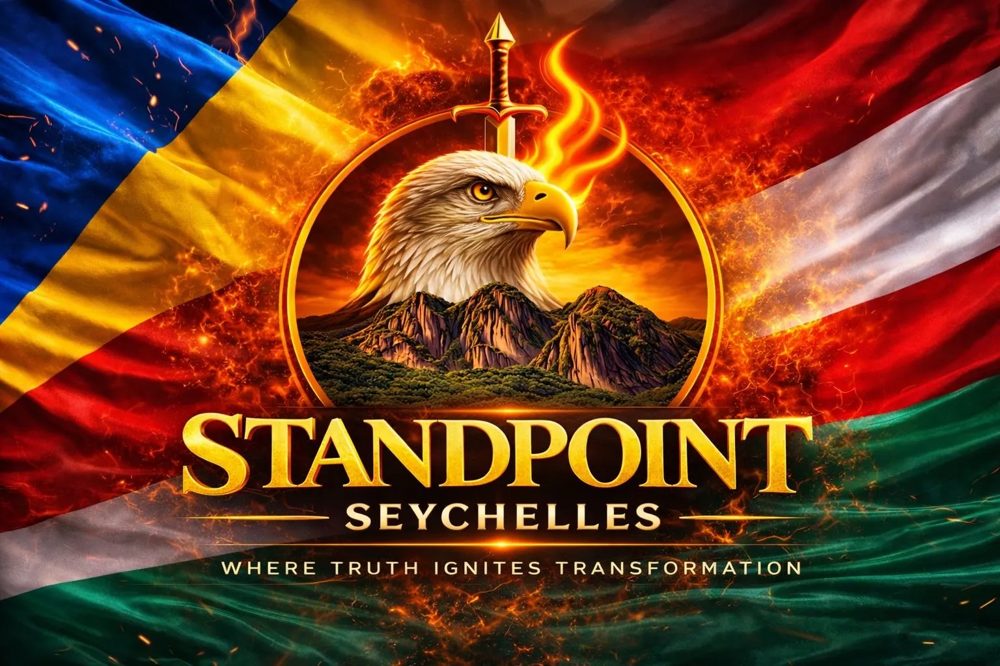

An informed citizen is an empowered citizen
Standpoint Seychelles is an independent, non-partisan civic education organisation. We help Seychellois understand how their country works — so everyone can take part with confidence.
Making civics clear for everyone
Too often, information about our institutions is buried in legal language. We translate it into clear visuals and short guides that work on a phone screen, in a classroom or on a community noticeboard.
Our name says it: everyone deserves the knowledge to form their own standpoint.
Our principles
- Non-partisan. We explain the system. We never tell anyone how to vote.
- Accurate. Every explainer is checked against the Constitution and official sources.
- Accessible. Plain language, visual first, free for all.
- Local. Made in Seychelles, for Seychelles.
For Seychelles, by Seychellois
Our emblem brings together the eagle's clear sight, the sword of truth, the flame of knowledge and the granite mountains of home. Together they stand for what we believe: when people understand how their country works, truth ignites transformation.

For every Seychellois
Young people
First-time voters and students learning about the system they are about to join.
Educators
Teachers looking for ready-to-use visuals for civics and social studies lessons.
Communities
Districts, NGOs and families who want to understand and engage with decisions that affect them.